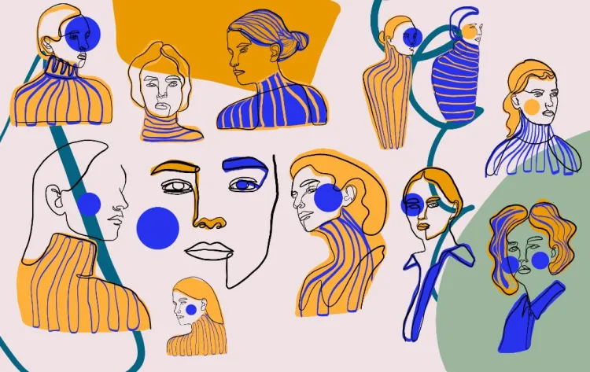

Abstract art uses visual language of shape, form, color and line to create a composition which may exist with a degree of independence from visual references in the world.
I've reserched a collection of my favorite abstract art. Help me decide which piece I should go with.
my favoritesInspired by the work of the American Abstract Expressionist Jackson Pollock, paint splatter images and drip textures bring an eclectic and energized feel to design projects. Particularly beautiful as backgrounds for packaging and large-scale print designs — such as posters and banners — these types of images bring color, texture, and movement to layouts, while creating a surprisingly uniform and versatile backdrop for typography and logos.
Art reached new levels of abstraction through the work of American painter Mark Rothko, who was renowned for his large-scale “Color Field” paintings. His monumental canvases explored the psychological and dramatic potential of block color.
Suminagashi, the ancient art of Japanese marbling, is arguably one of the earliest forms of abstract art, with the first known example dating to the 10th century.
At the start of the 20th Century, artists Pablo Picasso and Georges Braque endeavored to represent all possible viewpoints of a subject or object, all at once. The result of the experiment was Cubism, an abstract art style in which loosely-identifiable subjects appear fragmented and geometrical.
Catalan artist Joan Miró combined abstract line drawings and paintings with surrealist subject matter. Much of his work used, or was influenced by, the printing process of lithography, which may have contributed to the graphic feel of his art. Abstract line art, in which simple, continuous lines were used to create forms and shapes, are a hallmark of Miró’s work and of many other abstract artists working during the 1950s and 1960s.
The eclectic Memphis Style is the result of a movement initiated by a group of Italian designers, architects, and artists in the early 1980s. Memphis style emphasizes geometry, bold color, and pattern, and touches on a range of art styles from Art Deco to Kitsch.
Fluid, curving forms and muted mid-century colors are the hallmarks of the abstract organic art style. Artists such as Charles and Ray Eames revisited and reinterpreted indigenous art styles during the 1950s, resulting in organic shapes and an emphasis on natural materials, textures, and colors.
Halftone describes the dotted effect created through printing, by breaking images up into a series of dots. The effect was replicated by pop artists such as Andy Warhol and Roy Lichtenstein. During the 1960s and 1970s these artists often strove to make their artworks look like newspaper billboard ads.
Although not strictly abstract, surrealist art aims to achieve a distorted version of reality by manipulating realist imagery. Artists such as Salvador Dalí, René Magritte, and Frida Kahlo were influenced by psychoanalysis, a growing field of study and practice in the early 20th century. Their paintings and sculptures sought to expand the creative potential of the mind, by juxtaposing images together that appeared irrational and unconventional.
Painting is often viewed as the dominant media of abstract art. However, many artists looked to sculpture and relief to translate abstract concepts into 3D form. Look to British sculptor Barbara Hepworth for ultimate abstract inspiration. Her monumental sculptures cast in metal, stone, and wood represent the pinnacle of Modernist achievement between the 1930s and 1960s.